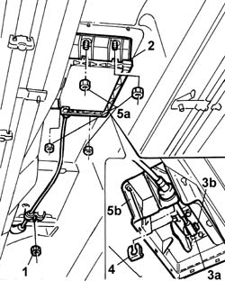
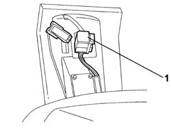
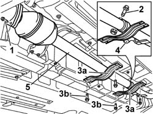
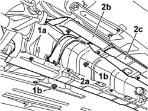

2135A10 Automatic transmission control LEVER AND SUPPORT - R.R. and overhaul
- Path
- Procedures > 21 GEARBOX > 2135 automatic transmission external controls > 2135A AUTOMATIC TRANSMISSION MANUAL CONTROLS > 2135A10 Automatic transmission control LEVER AND SUPPORT - R.R. and overhaul
- Kind
- repair procedure (removal / refitting; the operation number is the code)
- Applies to
- engines: 2.4 20V, 3.0 V6, 3.2 V6; all production periods
- Interactive page
- https://sloeber94.github.io/elrnDB-lThss/en/#/164588
Applies to: engines: 3.0 V6, 3.2 V6; all production periods
 Removing
Removing
 Refitting
Refitting- Open the boot, remove the cover on the left hand side and disconnect the negative battery lead.
See in Op. 7040D50 ENGINE COMPARTMENT UPPER SOUND INSULATION SHIELD - R.R.
See in Op. 7040L37 GEAR LEVER SURROUNDING TRIM - R.R.
- Position the vehicle on a lift.
- Raise the vehicle
See in Op. 1080B62 CATALYTIC CONVERTER - R.R.
See in Op. 1076A48 Catalytic converter HEAT SHIELD - R.R.
1. Undo the nut fixing the bowden cable mounting bracket to the bodyshell
2. Carefully open the lower lever support cover spring.
3. Release the bowden cable retainer (3b) and disconnect the end (3a) from the lever support.
4. Remove the bowden cable retainer.
5. Undo the nuts (5a) fixing the support (5b) to the bodyshell.

Applies to: engines: 3.0 V6, 3.2 V6; all production periods
1. Disconnect the gear lever electrical connection, then release the support via the lower part of the vehicle, complete with lever and knob.

Applies to: engines: 3.0 V6, 3.2 V6; all production periods
Refitting
Removing- Position the support after having connected the electrical connection.
- Tighten the nuts fixing the support to the bodyshell to the recommended torque.
- Connect the bowden cable to the support.
- Position the lower support cover, fitting the retaining springs.
See in Op. 1076A48 Catalytic converter HEAT SHIELD - R.R.
See in Op. 1080B62 CATALYTIC CONVERTER - R.R.
- Lower the vehicle
- Remove the vehicle from the lift.
See in Op. 7040L37 GEAR LEVER SURROUNDING TRIM - R.R.
- Connect the negative battery terminal and position the cover on the left hand side of the luggage compartment.
See in Op. 7040D50 ENGINE COMPARTMENT UPPER SOUND INSULATION SHIELD - R.R.
Applies to: engines: 2.4 20V; all production periods
Removing
Refitting- Open the boot, remove the cover on the left hand side and disconnect the negative battery lead.
See in Op. 7040D50 ENGINE COMPARTMENT UPPER SOUND INSULATION SHIELD - R.R.
See in Op. 7040L37 GEAR LEVER SURROUNDING TRIM - R.R.
- Position the vehicle on a lift.
- Raise the vehicle.
See in Op. 7055B54 PROTECTION/GUARD under engine - R.R.
1. Undo the bolts fixing the centre section to the intermediate section of the exhaust pipe.
2. Undo the bolt fixing the collar joining the centre section of the exhaust pipe to the rear section.
3. Remove the reinforcement brackets (3a) acting on the fixing bolts (3b).
4. Release the flexible mounting supporting the rear section of the exhaust pipe.
5. Remove the centre section of the exhaust pipe turning it slightly in order to release it from the retaining pin on the rear section of the exhaust pipe.

Applies to: engines: 2.4 20V; all production periods
1. Remove the reinforcement bracket (1a) acting on the nuts (1b).
2. Undo the bolts (2a) and remove the heat shields (2b) and (2c) for the centre section of the exhaust pipe.

Applies to: engines: 2.4 20V; all production periods
1. Undo the nut fixing the bowden cable mounting bracket to the bodyshell
2. Carefully open the lower lever support cover spring.
3. Release the bowden cable retainer (3b) and disconnect the end (3a) from the lever support.
4. Remove the bowden cable retainer.
5. Undo the nuts (5a) fixing the support (5b) to the bodyshell.
Applies to: engines: 2.4 20V; all production periods
1. Disconnect the gear lever electrical connection, then release the support via the lower part of the vehicle, complete with lever and knob.
Applies to: engines: 2.4 20V; all production periods
Refitting
Removing- Position the support after having connected the electrical connection.
- Tighten the nuts fixing the support to the bodyshell to the recommended torque.
- Connect the bowden cable to the support.
- Position the lower support cover, fitting the retaining springs.
- Position the heat shields for the centre section of the exhaust pipe and secure them using the bolts.
- Position the reinforcement bracket and secure it using the nuts.
- Position the centre section of the exhaust pipe fitting the pin on the rear section in line with the reference on the centre section.
- Tighten the bolt fixing the collar joining the centre section of the exhaust pipe to the rear section.
 | Value - daNm | Fastening | Component | Ø |
|---|---|---|---|---|
. | (rear section collar) 4.5 | Bolt | INTERMEDIATE EXHAUST PIPE | M10 X 1.25 |
- Secure the rear section of the exhaust pipe to the flexible retaining mounting.
- Tighten the bolts fixing the centre section to the intermediate section of the exhaust pipe.
- Position the reinforcement brackets and secure them using the fixing bolts.
See in Op. 7055B54 PROTECTION/GUARD under engine - R.R.
- Lower the vehicle
- Remove the vehicle from the lift.
See in Op. 7040L37 GEAR LEVER SURROUNDING TRIM - R.R.
- Connect the negative battery terminal and position the cover on the left hand side of the luggage compartment.
See in Op. 7040D50 ENGINE COMPARTMENT UPPER SOUND INSULATION SHIELD - R.R.
Topics linked from this page (5)
- 1076A48 Catalytic converter HEAT SHIELD - R.R.
- 1080B62 CATALYTIC CONVERTER - R.R.
- 7040D50 ENGINE COMPARTMENT UPPER SOUND INSULATION SHIELD - R.R.
- 7040L37 GEAR LEVER SURROUNDING TRIM - R.R.
- 7055B54 PROTECTION/GUARD under engine - R.R.